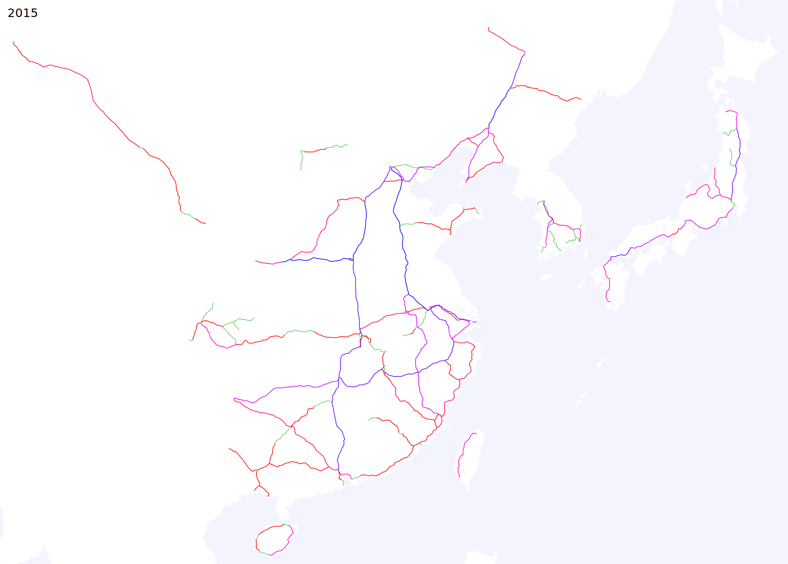
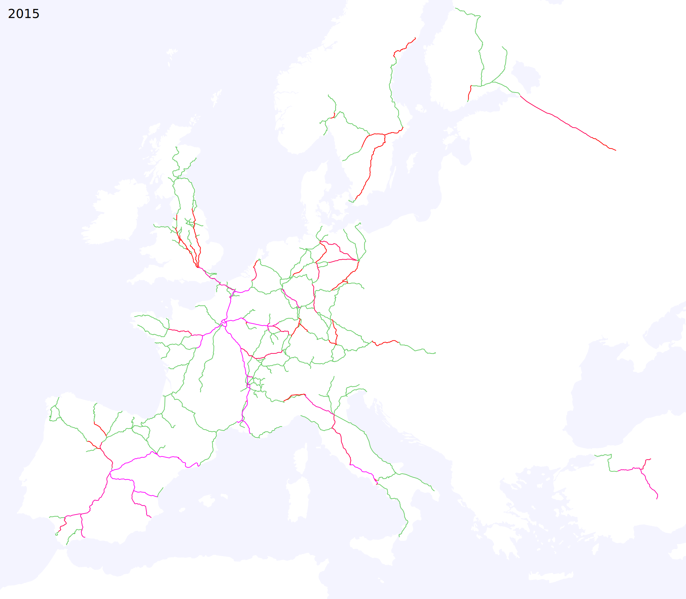
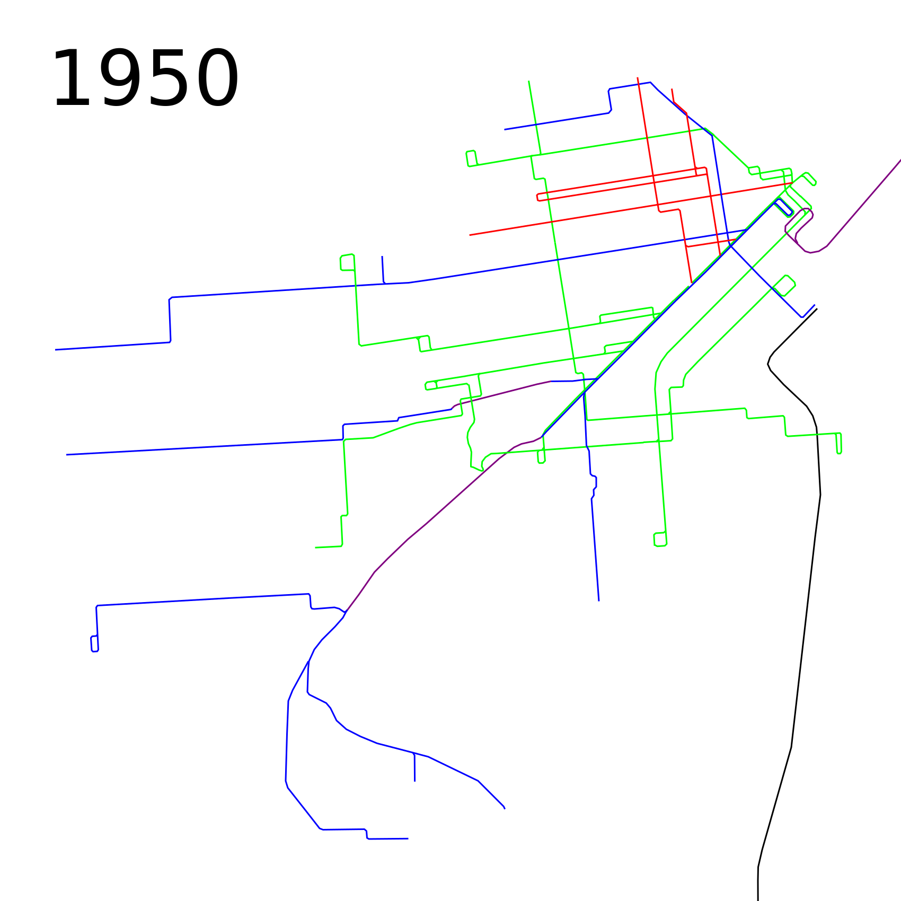
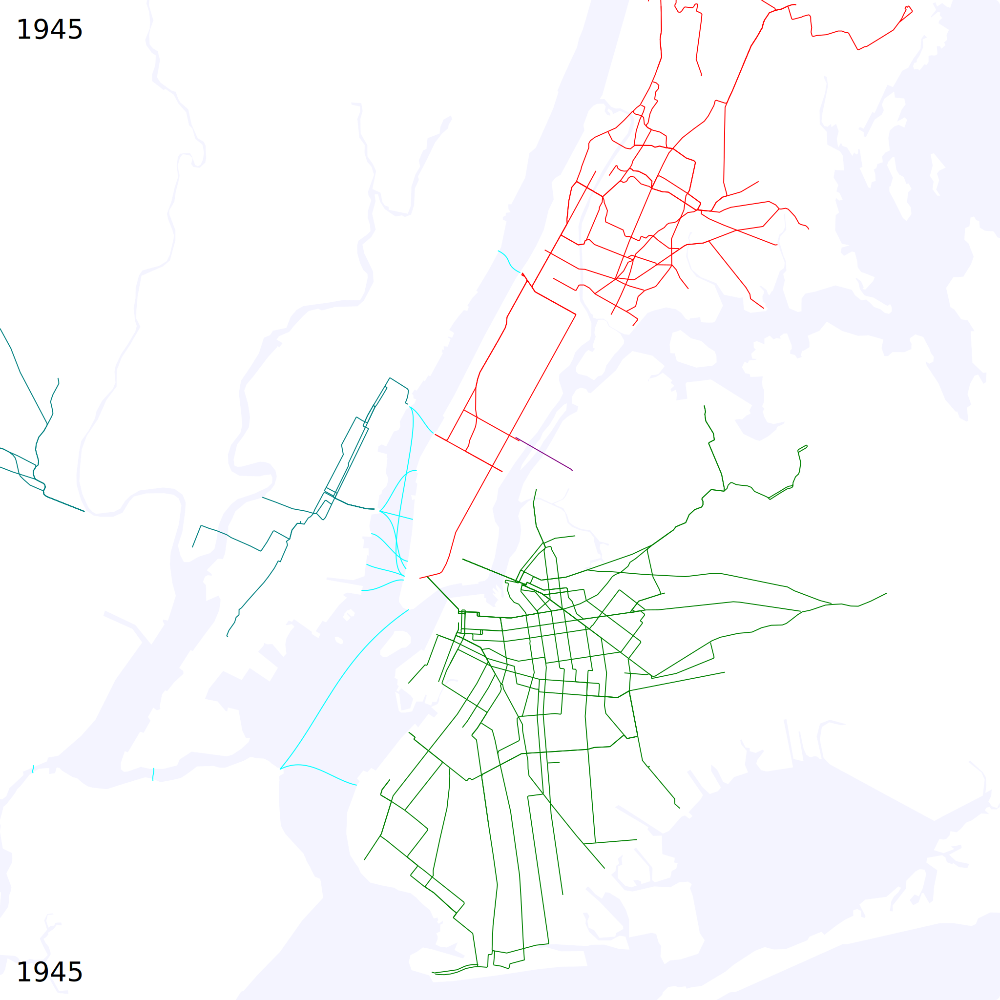

Miscellaneous (not strictly rapid transit) timelines:
High speed rail in Asia and Europe, 1965-2015

Passenger rail in the Northeast US, 1835-2010
Passenger rail in California, 1860-2010
San Francisco streetcars and trolleybuses, 1860-2010

New York streetcar abandonment, 1932-1957

Hurricane Sandy rapid transit disruption and recovery, October 2012-June 2013
Routes using Harvard Transit Tunnel, 1920-2010
Black Rock City street layouts, 1996-2017
Other maps:
Scale comparison of selected streetcar systems
Google map: Boston-New York by local interurban trolleys, 1915
Google maps of streetcar systems, 1932:
New York City Area
San Francisco Bay Area
Google maps of trolleybus systems, 1950s:
Brooklyn
Boston
Google map of all trolleybus lines in the US and Canada, current
Google map of all year-round passenger rail in the Americas, current
See also:
historical rapid transit timelines